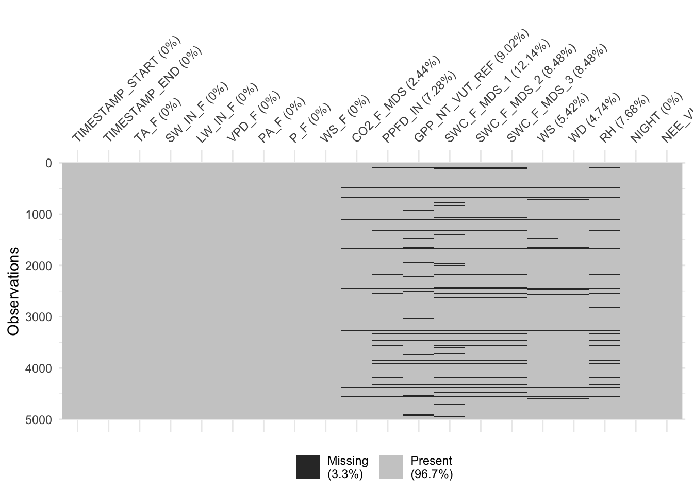
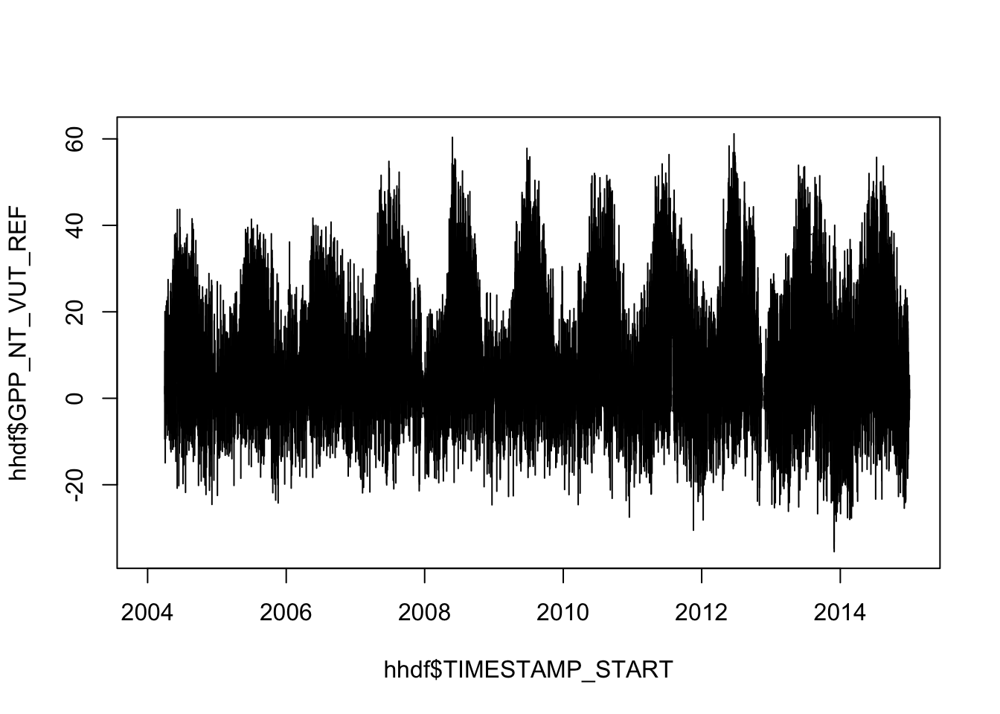
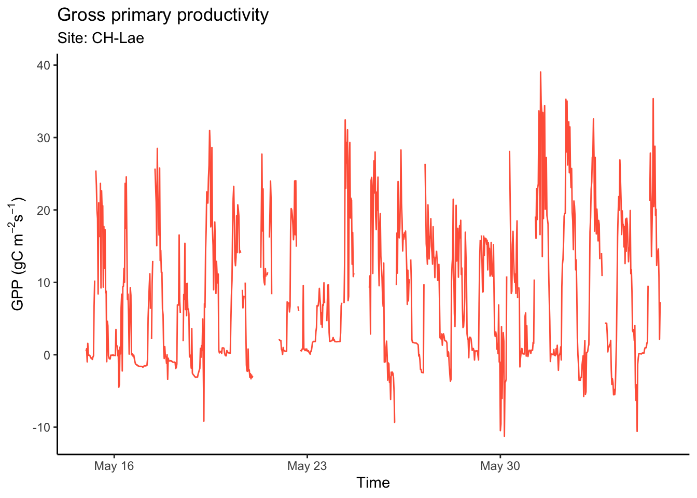
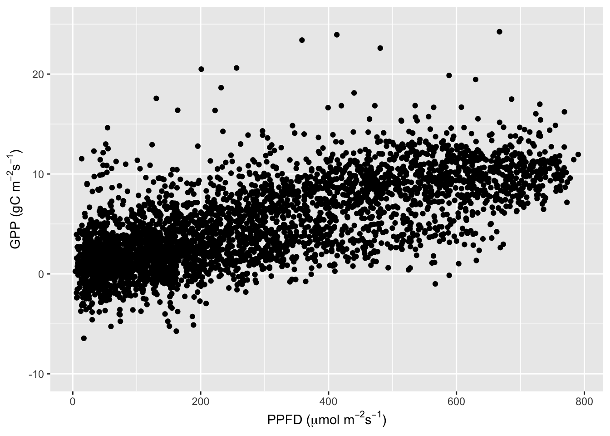
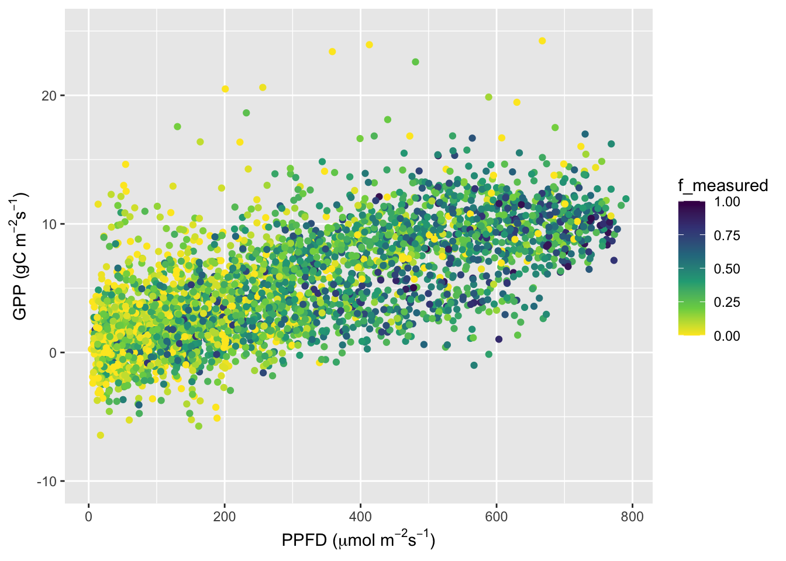
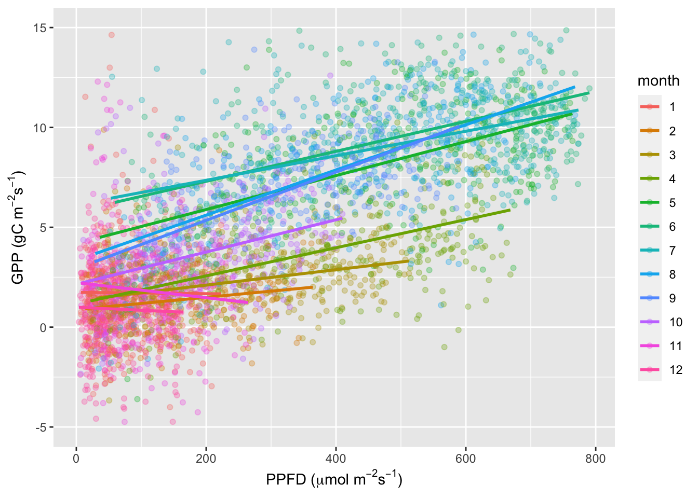

Chapter 2 Data wrangling
2.1 Introduction
In this chapter, you will learn to efficiently explore data. This includes understanding how the data is structured, what “dimensions” are in a dataset, how to manipulate the data and how to visualise it. Efficient data exploration and wrangling are the basis for generating hypotheses, testing them, and repeating the wrangling-visualisation-hypothesis circle over and over. This is science.
The aim of data wrangling is to transform the data from the raw data into a cleansed, more relevant format. This process typically involves steps such as exploring the data, sorting the data, filtering out irrelevant or redundant variables, structuring the data in new ways and visualising the data. It is common for scientists to spend the majority of their time ‘wrangling’ the data. If the data wrangling process is done well, the analysis will be considerably more efficient. Data wrangling can be in a number of programs.
R offers very useful functionalities for achieving efficient data wrangling and visualisation, particularly using functions from the tidyverse. The aim of the tidyverse is to have a collection of functions and packages that share a common design philosophy and follow a set workflow, in order to make the work of data scientists more productive and reproducible. The steps in this workflow are import the data, tidy the data , understand the data (through transformation, visualisation and modelling), and finally to communicate the results. You have already used some of them in the previous chapter. This chapter will introduce some more of the basic and most important tidyverse functions, including ggplot. The contents of this tutorial are inspired by the (freely available online) book R for Data Science by Grolemund & Wickham.
2.1.1 Learning objectives
After you have gone through the lecture and solved the exercises you should be able to:
- Define data, understand the structure of data and list examples of environmental data.
- Implement common pre-processing steps.
- Understand tidy data and data dimensions.
- Visualise the multiple dimensions of data.
2.1.2 Key points from the lecture
The lectures introduced the basics of data transformation with dplyr and data visualisation with ggplot2. The following is a recap of the most important points. The tutorial below then provides an introduction to implementing these with example data.
2.1.2.1 Data transformation with dplyr
In data science when considering the number of features, variables or attributes these are referred to as the data dimensionality. A simple data set containing two features such as temperature and elevation would be considered two dimesional data. To plot the data a 2D graph showing elevation on the x-axis and temperature on the y- axis and the observations within, would be straight forward. If another variable called precipitation, plotting the whole data set would require a 3D graph. Most data sets contain many attributes, making plotting in dimensions impossible. Therefore, dimensions need to be choosen or reduced. Which dimensions we choose will vary depending on the research question we have for our data set.
Data variation is defined as how much data points differ between observations. It may also be called the spread or dispersion of the data. An example would be the range of temperatures annually along an elevational gradient.
Below are some of the essential functions of the tidyverse package dplyr to navigate dimensions and variation of a data set:
- Selecting observations by their values:
filter() - Selecting variables by their names:
select() - Creating new variables:
mutate() - Aggregating multiple values down to a single summary:
summarise()
Remember also that dplyr functions (sometimes, referred to as “verbs”) all work similarly:
- The first argument is the data frame. When using pipes (
%>%, see Chapter 1), the first argument specifying the data frame is omitted and the function takes its place. What is being piped into it, “coming” from the left side of%>%. - The remaining arguments specify what to do with the data frame (without quotes (
"") on variable names). - The output of the function is again a data frame.
2.1.2.2 Data visualisation with ggplot2
Data visualisation aims to convert data values into visual elements. This is done by ‘projecting’ data values onto quantifiable features of the graph, known as the aestetics. Variation along each ‘dimension’ is plotted onto one aesthetic. In other words, a column such as date will become the x-axis and then mean temperature along the y-axis. To add further ‘dimensions’ onto the asthetics, the temperature points could be coloured according to how warm it was. Visualising different dimensions of a data set can help data become more accessible and easier to understand.
In the lecture we learned about data visualisation with the tidyverse package ggplot2 (Hadley Wickham 2016). Remember the steps for creating a figure with ggplot2:
We will start by calling the function ggplot(). The first argument is the data frame that contains the values that are to be displayed in a figure. The second argument is the aesthetics “mapping” argument and always comes in the form of aes(...). Inside the brackets of aes(...), we usually indicate the column (variable) that specifies the coordinate of a visualisation element (e.g., a point) along the x-axis with x = ..., and along the y-axis with y = ....
Then, add an additional function call to the initial ggplot(), with a + to specify the type of visualisation element (e.g., points, or lines, etc.) that maps the variable values to the plot coordinate space (for example x-y). The ggplot-+ works a bit like the pipe operator %>%. This function call now specifies the type of plot to create. The name of this function starts with geom_.
For example, to plot points of temperature at a given time from a data frame df into x-y space (a scatterplot), we would write something like:
ggplot(data = df, aes(x = time, y = temperature)) +
geom_point()2.2 Tutorial
After learning about some basic concepts and functions for data wrangling and visualisation, we will apply some of the tidyverse functions on the data. As in Chapter 1, we will be using the time series data from eddy covariance flux measurements and meteorological variables measured in parallel. In this sub-section, we start with half-hourly data from a flux tower near Zürich (CH-Lae, located on the Lägern mountain between Regensberg and Baden and run by our colleagues here at ETH). The data covers years 2004-2014 at a half-hourly time step. That is a large amount of data which can be tricky to work with in Excel. While Excel is a popular go to programm to work on data, it is less equipped to deal with very large data sets, does not have nearly as many options tow work with as in R and lacks in making a reproducible workflow. In this course, we will teach you to do data wrangling completely outside of Excel and show you how it improves your life as a (data) scientist considerably.
Every research project starts with a broad overall question. In this tutorial, our aim to investigate the variations and controls of ecosystem-level gross primary production (GPP). GPP is the gross carbon assimilation by photosynthesis of all plants in the “footprint” of an eddy covariance tower and can be derived from the measurement of the vertical turbulent net flux of CO2 (on the basis of vertical air movement and parallel CO2 concentration measurements). “Gross” because plants simultaneously respire CO2 as they assimilate it. Several assumptions have to be made to get from raw measurements (simultaneous measurements of CO2 concentration and velocities of air movement in vertical direction, typically taken at 50 Hz) to the final GPP time series. In our dataset, different GPP time series are available and are derived using different assumptions. Below, we will work with the one called GPP_NT_VUT_REF. See Pastorello et al. (2020) (https://www.nature.com/articles/s41597-020-0534-3) for a comprehensive description of GPP estimation methods.
Now that we roughly know what to expect from the contents of our dataset and we have a research question in mind (controls and variations of GPP), we can start searching for answers by reading, transforming, visualising, and modelling our data. Based on what we learn from this initial exploratory data analysis, we will refine our research question, re-focus it, and follow it up with the next level of data analysis and modelling in later chapters.
2.2.1 Libraries
Install missing packages for this tutorial.
list_pkgs <- c("tidyverse", "conflicted")
new_pkgs <- list_pkgs[!(list_pkgs %in% installed.packages()[, "Package"])]
if (length(new_pkgs) > 0) install.packages(new_pkgs)
library(tidyverse)
library(conflicted)tidyverse (Hadley Wickham et al. 2019) is a collection of packages and library(tidyverse) loads them all. For this tutorial we use in particular:
- dplyr (Hadley Wickham et al. 2021)
- tidyr (Hadley Wickham 2021)
- purrr (Henry and Wickham 2020)
- readr (Hadley Wickham and Hester 2020)
- lubridate (Grolemund and Wickham 2011)
- stringr (Hadley Wickham 2019b)
- ggplot2 (Hadley Wickham 2016)
It can happen that different functions with the same name are available from different packages. To avoid conflicts and make sure we use the preferred ones, we can use the conflicted package (Hadley Wickham 2019a) and specify:
conflicted::conflict_prefer("select", "dplyr")
conflicted::conflict_prefer("filter", "dplyr")2.2.2 Variables in a data frame
We will start by reading in the half-hourly data from the eddy-covariance site CH-Lae again (as we did already in Chapter 1) and start to explore the data. We use the function read_csv() from the readr package (part of tidyverse) here for reading the CSV since it is faster than the base-R read.csv() and generates a nicely readable output when printing the object. It is also more reproducible as it avoids inheriting behaviour from your operating system, which may mean the code only wokrs on your laptop.
‘readr’ has many options to customise the read_csv() function, while avoiding . For example if you have lines with meta data information at the top of the data using skip = n or comments = "#" within the function will stop R from reading those lines. Equally, if the data is missing column names add col_names = FALSE or specify column names with col_names = c("x", "y", "z"). For more details on read_csv() click here.
library(tidyverse)
hhdf <- read_csv("./data/FLX_CH-Lae_FLUXNET2015_FULLSET_HH_2004-2014_1-3.csv")
hhdf## # A tibble: 192,864 × 235
## TIMESTAMP_START TIMESTAMP_END TA_F_MDS TA_F_MDS_QC TA_ERA TA_F TA_F_QC
## <dbl> <dbl> <dbl> <dbl> <dbl> <dbl> <dbl>
## 1 200401010000 200401010030 -9999 -9999 -2.22 -2.22 2
## 2 200401010030 200401010100 -9999 -9999 -2.25 -2.25 2
## 3 200401010100 200401010130 -9999 -9999 -2.28 -2.28 2
## 4 200401010130 200401010200 -9999 -9999 -2.50 -2.50 2
## 5 200401010200 200401010230 -9999 -9999 -2.72 -2.72 2
## 6 200401010230 200401010300 -9999 -9999 -2.94 -2.94 2
## 7 200401010300 200401010330 -9999 -9999 -3.17 -3.17 2
## 8 200401010330 200401010400 -9999 -9999 -3.39 -3.39 2
## 9 200401010400 200401010430 -9999 -9999 -3.61 -3.61 2
## 10 200401010430 200401010500 -9999 -9999 -3.59 -3.59 2
## # … with 192,854 more rows, and 228 more variables: SW_IN_POT <dbl>,
## # SW_IN_F_MDS <dbl>, SW_IN_F_MDS_QC <dbl>, SW_IN_ERA <dbl>, SW_IN_F <dbl>,
## # SW_IN_F_QC <dbl>, LW_IN_F_MDS <dbl>, LW_IN_F_MDS_QC <dbl>, LW_IN_ERA <dbl>,
## # LW_IN_F <dbl>, LW_IN_F_QC <dbl>, LW_IN_JSB <dbl>, LW_IN_JSB_QC <dbl>,
## # LW_IN_JSB_ERA <dbl>, LW_IN_JSB_F <dbl>, LW_IN_JSB_F_QC <dbl>,
## # VPD_F_MDS <dbl>, VPD_F_MDS_QC <dbl>, VPD_ERA <dbl>, VPD_F <dbl>,
## # VPD_F_QC <dbl>, PA <dbl>, PA_ERA <dbl>, PA_F <dbl>, PA_F_QC <dbl>, …You have already inspected the size and dimensions of this data frame in Chapter 1 with functions, such as dim(), nrow(), ncol(), head(), names() etc.
For our further data exploration, we will reduce the data frame we are working with and select only certain variables. Reducing the dataset can have the advantage of speeding up further processing steps, especially when the data is large.
Variable selection is not only a matter of improving processing efficiency, but is an important step for analysis and modelling and should be guided by our understanding of the data. I general, we select the variables that are expected to influence the phenomena that we are investigating based on the existing knowledge. The selection we decide upon must be documented for publications to aid reproducibility. More on variable selection will be taught in Chapter @ref(#ch-08).
Here, many of the variables in the data frame record the same information, but are derived with slightly different assumptions and gap-filling techniques. This is indicated by the suffices of the variable names, for example some variable vontain _REF (such as GPP_NT_VUT_REF), indicating it is the most representative reference value for this variable. A SUBSET version of the data, with less variables, is also provided for ’non-expert users. See Pastorello et al. (2020) for a comprehensive description of alternative methods. For the further steps in this chapter we will now subset our original data. We select the following variables:
- Time of the measurement (all variables with names starting with
TIMESTAMP) - All meteorological variables following the final gap-filled method (all variables with names ending with
_F) - A gap-filled version of the CO2 concentration (
CO2_F_MDS) - The incoming photosynthetic photon flux density (
PPFD_IN). This variable strongly covaries, but is not equal, to the shortwave incoming radiation (SW_IN) - GPP estimates are based on the nighttime decomposition method, using the “most representative” of different gap-filling versions, after having applied the variable u-star filtering method (
GPP_NT_VUT_REF) - Soil water measured at different depths (variables starting with
SWC_F_MDS) - Quality flag of the CO2 flux measurement (
NEE_VUT_REF_QC, for half-hourly data: 0 = measured, 1 = good quality gap-fill, 2 = medium, 3 = poor; for daily data: the fraction of good quality gap-filled half-hourly data is used for aggregation to daily data.) - Other variables: Wind speed (
WS), wind direction (WD), friction velocity (USTAR), relative humidity (RH) - Quality flags for different variables: (ending with
QC) - Do not use any radiation variables derived with the “JSBACH” algorithm (not with a name that contains the string
JSB) - Flag indicating whether a time step is at night (
NIGHT)
This is implemented by:
hhdf <- hhdf %>%
select(
starts_with("TIMESTAMP"),
ends_with("_F"),
CO2_F_MDS,
PPFD_IN,
GPP_NT_VUT_REF,
starts_with("SWC_F_MDS"),
NEE_VUT_REF_QC,
WS, WD, USTAR, RH,
ends_with("QC"),
-contains("JSB"),
NIGHT
)This reduces our dataset from 235 available variables to 68 variables. Our data set now only contains the columns we will need in our further analysis. As you can see, select() is a powerful tool to apply multiple selection criteria on your data frame in one step. It takes many functions that make filtering the columns easier. For example, criteria can be formulated based on the variable names with starts_with(), ends_with, contains(), matches(), etc. Using these functions within select() can help if several column names start with the same characters or contain the same pattern and all need to be selected.
If a minus (-) is added in front of a column name or one of the mentioned functions within select(), then R will not include the stated column(s).
Note that the selection criteria are evaluated in the order we write them in the select() function call. You can find the complete reference for selecting variables here.
2.2.3 Time objects
The automatic interpretation of the variables TIMESTAMP_START and TIMESTAMP_END by the function read_csv() is not optimal:
class(hhdf$TIMESTAMP_START[[1]])## [1] "numeric"as.character(hhdf$TIMESTAMP_START[[1]])## [1] "200401010000"As we can see, it is considered by R as a numeric variable with 12 digits (“double-precision”, occupying 64 bits in computer memory). After printing the variable as a string, we can guess that the format is: YYYYMMDDhhmm.
The lubridate (Grolemund and Wickham 2011) is a package designed to help processing date and time objects. Knowing the format of the timestamp variables in our dataset, we can use ymd_hm() to convert them to actual date-time objects.
library(lubridate)
dates <- ymd_hm(hhdf$TIMESTAMP_START)
head(dates)## [1] "2004-01-01 00:00:00 UTC" "2004-01-01 00:30:00 UTC"
## [3] "2004-01-01 01:00:00 UTC" "2004-01-01 01:30:00 UTC"
## [5] "2004-01-01 02:00:00 UTC" "2004-01-01 02:30:00 UTC"Working with such date-time objects greatly facilitates typical operations on time series. For example, adding one day can be done by:
nextday <- dates + days(1)
head(nextday)## [1] "2004-01-02 00:00:00 UTC" "2004-01-02 00:30:00 UTC"
## [3] "2004-01-02 01:00:00 UTC" "2004-01-02 01:30:00 UTC"
## [5] "2004-01-02 02:00:00 UTC" "2004-01-02 02:30:00 UTC"The following returns the month of each date object:
month_of_year <- month(dates)
head(month_of_year)## [1] 1 1 1 1 1 1The number 1 stands for the month of the year, i.e. January.
You can find more information on formatting dates and time within the tidyverse here, and a complete reference of the lubridate package is available here.
2.2.4 Variable (re-) definition
Time can be noted in a multitide of different ways, which can lead to confusion. It is important to know what system was used to record times and dates and convert it to a format useful for the overall research question. Sometimes the months are the defining timescale, somtimes years. There are packages in R that can help convert timestamps and objects. We just saw an example of this using lubridate to process date and time objects. But we have not applied the conversion of the timestamp columns to date-time objects in our data frame hhdf yet. In base-R, we would do this by:
hhdf$TIMESTAMP_START <- ymd_hm(hhdf$TIMESTAMP_START)Modifying existing or creating new variables (columns) in a data frame is done in the tidyverse using the function mutate().
hhdf %>%
mutate(TIMESTAMP_START == ymd_hm(TIMESTAMP_START))Mutating both our timestamp variables could be written as mutate(TIMESTAMP_START = ymd_hm(TIMESTAMP_START), TIMESTAMP_END = ymd_hm(TIMESTAMP_END)). Sometimes, such multiple-variable mutate statements can get quite long. A nice short version of this can be implemented using across():
hhdf %>%
mutate(across(starts_with("TIMESTAMP_"), ymd_hm))## # A tibble: 192,864 × 65
## TIMESTAMP_START TIMESTAMP_END TA_F SW_IN_F LW_IN_F VPD_F PA_F
## <dttm> <dttm> <dbl> <dbl> <dbl> <dbl> <dbl>
## 1 2004-01-01 00:00:00 2004-01-01 00:30:00 -2.22 0 304. 0.562 93.3
## 2 2004-01-01 00:30:00 2004-01-01 01:00:00 -2.25 0 304. 0.56 93.3
## 3 2004-01-01 01:00:00 2004-01-01 01:30:00 -2.28 0 281. 0.558 93.3
## 4 2004-01-01 01:30:00 2004-01-01 02:00:00 -2.50 0 281. 0.565 93.3
## 5 2004-01-01 02:00:00 2004-01-01 02:30:00 -2.72 0 281. 0.571 93.3
## 6 2004-01-01 02:30:00 2004-01-01 03:00:00 -2.94 0 281. 0.577 93.3
## 7 2004-01-01 03:00:00 2004-01-01 03:30:00 -3.17 0 281. 0.584 93.2
## 8 2004-01-01 03:30:00 2004-01-01 04:00:00 -3.39 0 281. 0.59 93.2
## 9 2004-01-01 04:00:00 2004-01-01 04:30:00 -3.61 0 264. 0.596 93.2
## 10 2004-01-01 04:30:00 2004-01-01 05:00:00 -3.59 0 264. 0.606 93.2
## # … with 192,854 more rows, and 58 more variables: P_F <dbl>, WS_F <dbl>,
## # CO2_F_MDS <dbl>, PPFD_IN <dbl>, GPP_NT_VUT_REF <dbl>, SWC_F_MDS_1 <dbl>,
## # SWC_F_MDS_2 <dbl>, SWC_F_MDS_3 <dbl>, SWC_F_MDS_4 <dbl>,
## # SWC_F_MDS_1_QC <dbl>, SWC_F_MDS_2_QC <dbl>, SWC_F_MDS_3_QC <dbl>,
## # SWC_F_MDS_4_QC <dbl>, NEE_VUT_REF_QC <dbl>, WS <dbl>, WD <dbl>,
## # USTAR <dbl>, RH <dbl>, TA_F_MDS_QC <dbl>, TA_F_QC <dbl>,
## # SW_IN_F_MDS_QC <dbl>, SW_IN_F_QC <dbl>, LW_IN_F_MDS_QC <dbl>, …Our data frame now has the TIMESTAMP columns in the format ‘year-month-day hour:minute’ so ‘2004-01-01 00:00:00’ rather than as before ‘200401010000’. The seconds are added as well but there are ‘00’ throughout the data set as they were not recorded in the first place. Splitting the date into year, month and day, will simplify the analysis if we need to filter by a specific month, or date.
We will encounter more ways to use mutate later in this tutorial. But a complete reference to mutate() is available here.
2.2.5 Selecting, cleaning and gap-filling
Selecting variables refers to the process of deciding which variables to include and which to exclude. Variables to exclude would be ones that are irrelevant to the downstream analysis or onces that are redundant as the same or similar information is already covered by another variable.
Data cleaning or cleansing is defined as the process by which inaccurate, incomplete or poor quality data is identified and removed or replaced.
Gap-filling is a process that fill gaps in the data that might occur through temporary loses of measuring instrument connections or coarse data. There are numerous methods used for gap filling such as extrapolation, using proxies or regression models.
For many applications, we want to filter the data so that the values of particular variables satisfy certain conditions. For example, if we have a good reason for excluding certain data points, we should do so. The function used for such tasks is filter(). As a first argument, it takes the data frame to which the filtering is applied. Remember that when using pipes (%>%), the first argument is not spelled out, but is taken from what is coming from the left of %>%. The second and subsequent arguments are the expressions that specify the criterion for filtering. The following operators relate to values to each other and evaluate to either TRUE or FALSE:
>greater than>=greater or equal than<smaller than<=smaller or equal than!=: not equal==: equal
Multiple filtering criteria can be combined with logical (boolean) operators:
&: logical and|: logical or!logical not
Here, we want to check whether a variable takes any of a larger set of values. For example, if we wanted to check whether a date, given by the month of the year, is in meteorological spring, we could write something like:
filter(df, month == 3 | month == 4 | month == 5)When writing code there are often several different ways to write commands that will output the same result. The just mentioned command is a little complicated. A much more powerful syntax to implement the same is:
filter(df, month %in% c(3, 4, 5))The %in% operator takes each element of what is on its left-hand-side and evaluates whether it is equal to any element of what is on its right-hand-side. Now, we can apply those different functions to our dataset. We will begin by filtering some GPP data based on its corresponding data quality information. This type of information is crucial as it allows us, e.g., to avoid using “poor” quality data for training a machine learning algorithm. In our dataset, the quality control flag for GPP_NT_VUT_REF is provided by NEE_VUT_REF_QC. Its corresponding codes are:
- 0 = measured
- 1 = good quality gap-filled
- 2 = medium
- 3 = poor
To take only actually measured or good quality gap-filled GPP data (0 and 1), we can do:
hhdf %>%
filter(NEE_VUT_REF_QC == 0 | NEE_VUT_REF_QC == 1)Or, as previously explained, we can also write:
hhdf %>%
filter(NEE_VUT_REF_QC %in% c(0,1))Note that filter() completely removes rows (note the information about the number of rows printed above). In some cases this is undesired and it is preferred to replace bad quality values with NA. NA is a widely used term to mark missing data and stands for “not available”, “not applicable” or “no answer”. It is important to note that specifying a value as missing is information. Dropping an entire row leads to the loss of this information. In R, NA is a “code” that lets R understand that the value is missing. Almost all operations on vectors where at least one value is NA also return NA. For example:
mean(c(1, 2, NA))## [1] NATo remove all missing values before evaluating the function, the common argument to set in the respective function call is na.rm. By default, it is usually set to FALSE, but we can do:
mean(c(1, 2, NA), na.rm = TRUE)## [1] 1.5For cases where we do not want to drop entire rows when applying filter(), but just replace certain values with NA, we can use mutate() instead and apply the function ifelse().
ifelse() takes a logical expression that evaluates to either TRUE or FALSE as the first argument, and returns the second argument if the expression evaluates to TRUE or the third argument if it evaluates to FALSE. In our case, we can do this by:
hhdf %>%
mutate(GPP_NT_VUT_REF = ifelse(NEE_VUT_REF_QC %in% c(0,1), GPP_NT_VUT_REF, NA))Some values in our data frame are -9999. When reading the documentation of this specific dataset, we learn that this is the code for missing data. We can replace such values in any column (except the columns starting with "TIMESTAMP_") with NA using the function na_if().
hhdf %>%
na_if(-9999) %>%
dim()## [1] 192864 65If our data contains NA values and we choose to drop the entire row should there be an NA in it, you can use another useful function drop_na():
hhdf %>%
na_if(-9999) %>%
drop_na() %>%
dim()## [1] 0 65In this case, however, we can see that every row contained an NA, resulting in all the rows being dropped, leaving only the column names. When using functions regarding the handling of NAs, be sure to know what the functions really do when applying them.
2.2.6 Functions
Functions are a set of instructions encapsulated within curly brackets ({}) that generate a desired outcome. Functions contain three main elements:
- They start with a name to describe their purpose,
- then they need arguments, which are a list of the objects being input,
- and lastly following the curly opening bracket function(x){... the code making up the ‘body’ of the function.
They become increasingly important the more experienced one gets at coding. Using functions minimises the amount of code being re-written, decreases accidental errors when retyping code and are key to keeping a clean workspace. Functions have their own workspace, which means variables within the function are only ‘live’ or used when the function is running but are not saved to the global environment unless they are part of the output of the function. A good moment to think about using a function is when sections of code are being repeated again and again.
Whenever possible, we should combine multiple processing steps that naturally belong together. Specifically, when the same sequence of steps must be applied to multiple datasets that have the same structure (variable names, etc.). We can combine the set of operations presented above into a single function. Once such a function is created, we can apply it to the data in one go, instead of repeating the successive steps.
We will now write our first function and implement the data cleaning steps we described above. The function consists of multiple sequences of code as it contains the different steps presented above and applies them sequentially.
clean_fluxnet_hh <- function(df){
df <- df %>%
## select only the variables we are interested in
select(
starts_with("TIMESTAMP"),
ends_with("_F"),
CO2_F_MDS,
PPFD_IN,
GPP_NT_VUT_REF,
starts_with("SWC_F_MDS"),
NEE_VUT_REF_QC,
WS, WD, USTAR, RH,
ends_with("QC"),
-contains("JSB"),
NIGHT
) %>%
## convert to nice time object
mutate_at(vars(starts_with("TIMESTAMP_")), ymd_hm) %>%
## set poor quality data to NA for multiple variables
mutate(
GPP_NT_VUT_REF = ifelse(NEE_VUT_REF_QC %in% c(0,1), GPP_NT_VUT_REF, NA),
TA_F = ifelse(TA_F_QC %in% c(0,1,2), TA_F, NA),
SW_IN_F = ifelse(SW_IN_F_QC %in% c(0,1,2), SW_IN_F, NA),
LW_IN_F = ifelse(LW_IN_F_QC %in% c(0,1,2), LW_IN_F, NA), # relaxing filter criterion
VPD_F = ifelse(VPD_F_QC %in% c(0,1,2), VPD_F, NA),
PA_F = ifelse(PA_F_QC %in% c(0,1,2), PA_F, NA), # relaxing filter criterion
P_F = ifelse(P_F_QC %in% c(0,1,2), P_F, NA), # relaxing filter criterion
WS_F = ifelse(WS_F_QC %in% c(0,1,2), WS_F, NA),
CO2_F_MDS = ifelse(CO2_F_MDS_QC %in% c(0,1,2), CO2_F_MDS, NA),
SWC_F_MDS_1 = ifelse(SWC_F_MDS_1_QC %in% c(0,1,2), SWC_F_MDS_1, NA),
SWC_F_MDS_2 = ifelse(SWC_F_MDS_2_QC %in% c(0,1,2), SWC_F_MDS_2, NA),
SWC_F_MDS_3 = ifelse(SWC_F_MDS_3_QC %in% c(0,1,2), SWC_F_MDS_3, NA),
SWC_F_MDS_4 = ifelse(SWC_F_MDS_4_QC %in% c(0,1,2), SWC_F_MDS_4, NA)
) %>%
## set all -9999 to NA
na_if(-9999) %>%
## drop QC variables (no longer needed), except NEE_VUT_REF_QC
select(-ends_with("_QC"), NEE_VUT_REF_QC)
return(df)
}The code chunk above contains our function, with each step that will be applied to the data. We begin by giving the function a name (clean_fluxnet_hh) and defining the argument of the function. The argument of a function is simply what will be input into the function or in other words the object the function will apply the steps to. Here, the argunment is a data frame (df). Then within the {}, each step is then defined. The first set of steps selects the variables we want to include, the next part uses the function mutate() to change the date and time into a better format and then changes the poor quality data for several variables to NA. For the meteorological covariates, the filtering criteria are relaxed here, compared to the filtering criterium for GPP (*_F_QC %in% c(0,1,2) vs. NEE_VUT_REF_QC %in% c(0,1)). This is chosen to avoid excessive data loss due to missing covariates. In the modelling examples of later chapter, GPP is the target variable. That is, we’re formulating models that predict GPP from its covariates. It’s generally advisable to avoid relying on gap-filled target data for model training (fitting), hence the stricter criterium for GPP.
In a next step, the missing data value of -9999 used for the data set is changed to NA, to make the further analysis easier and so functions in R to remove or omit NAs will work on our data. Lastly, no longer needed variables are removed.
Before, the closing }, we tell the function what we want the output of the function to be. Here, we want the cleaned data frame to be the output, hence return(df).
At this point, the function has not yet been applied to any data, it has only defined it and saved it under the name we gave it: clean_fluxnet_hh(). This is known as the function definition as it contains the instuctions of what the function should do when it is applied to the data. Next, we can apply it to our object, the data frame hhdf:
## apply our cleaning function
hhdf <- hhdf %>%
clean_fluxnet_hh()Above, the function we created called clean_fluxnet_hh() was applied to the data frame ‘hhdf’. It works within the tidyverse and applies all the functions specified above to our data line by line. The function takes a data frame as its first (and here only) argument, and it returns a data frame as its output. That is why we can write it in combination with the pipe operator as we did above. This was a very condensed introduction to functions. You will find more information here.
2.2.7 Data overview
After we have done the data cleaning by imputing NA for bad quality data, we should check again, how much data we are now left with and how big the data gaps for different variables are. Knowing this is particularly important when using the data later in combination with machine learning algorithms that cannot deal with missing data. In such cases, rows where at least one value is missing (NA), have to be discarded entirely. This may not be desirable if it reduces the number of rows too drastically.
We can calculate the percentage of missing data for each column with the following code:
hhdf %>%
summarise_all(funs(100*sum(is.na(.))/length(.))) %>%
t()## [,1]
## TIMESTAMP_START 0.000000
## TIMESTAMP_END 0.000000
## TA_F 0.000000
## SW_IN_F 0.000000
## LW_IN_F 0.000000
## VPD_F 0.000000
## PA_F 0.000000
## P_F 0.000000
## WS_F 0.000000
## CO2_F_MDS 2.230069
## PPFD_IN 7.143894
## GPP_NT_VUT_REF 8.675543
## SWC_F_MDS_1 12.091940
## SWC_F_MDS_2 8.418886
## SWC_F_MDS_3 8.418886
## SWC_F_MDS_4 22.360316
## WS 5.004563
## WD 4.434213
## USTAR 21.273021
## RH 7.565435
## NIGHT 0.000000
## NEE_VUT_REF_QC 0.000000We can see, that >20% of all values for SWC_F_MDS_4 and USTAR are missing, which can be problematic for further analyses. We can remove those variables from the data frame.
hhdf <- hhdf %>%
select(-USTAR, -SWC_F_MDS_4)We can also visualise the fraction of missing data after applying our data cleaning step, using the vis_miss from the visdat package (Tierney 2017). Since applying this function on such a large dataframe can be time consuming, we will apply it on a randomly selected subset. For this, we randomly select 5’000 entries from hhdf to get a feeling for how much of which data is missing. To randomly select 5’000 entries, we use the function sample_n(). This function samples n rows randomly from the provided data frame hhdf.
library(visdat)
vis_miss(
sample_n(hhdf, 5000),
cluster = FALSE,
warn_large_data = FALSE
)
In the figure above we can see each column from the data frame and the percentage of data that is missing (NA) for that column in brackets after the column name. This is a visual output of the information we got earlier for the percentage of missing data per column, after which the two columns (SWC_F_MDS_4 and USTAR) were removed. The black bars indicate observations where data is missig. The two ‘TIMESTAMP’ columns are completely grey since they contain no missing data. The black and grey boxes below the figure show us the total percentage of missing data for the whole data frame combined. In total 5% of our data is missing, when only the columns with less than 20% missing data are included. Since 95% of our data contains values this is a reasonable amount to continue our analysis with.
Let’s save this as a CSV file for later use.
write_csv(hhdf, file = "./data/FLX_CH-Lae_FLUXNET2015_FULLSET_HH_2004-2014_1-3_CLEAN.csv")Getting an overview of the quantity of missing data in a data set and each variable is an important step. It can help us decide which variables should be included for further analyses an may even highlight issues encountered during data collection. We showed you two ways to check the amount of missing data, in a table or visually. The cutoff for including variables for this data set was if over 20% data of the data for that variable was missing. Depending on the research question filtering may need to be more or less stringent. There are no general rules and it is advisable to explore sensitivity of your final results to the choice of such thresholds.
2.2.8 Data visualisation I
Plotting and visualizing data is an integral part of data processing. We previously created a simple x-y line plot, using base-R, in Chapter 1. Here, we will be working with the same half-hourly time series data from the eddy covariance flux measurements for the years 2004-2014.
A natural first visualisation step is therefore to plot our variables against time, for example, GPP_NT_VUT_REF versus TIMESTAMP_START:
plot(hhdf$TIMESTAMP_START, hhdf$GPP_NT_VUT_REF, type = "l")
ggplot2 offers a powerful and (at least after an initial brain-effort) intuitive syntax for building data visualisations in a versatile, elegant, and efficient way. It defines a complete “grammar of graphics” (thus the name ggplot), which allows you to consistently apply the same syntax for different purposes.
We create the same line plot as done above with geom_line():
library(ggplot2)
ggplot(data = hhdf, aes(x = TIMESTAMP_START, y = GPP_NT_VUT_REF)) +
geom_line()
This is a dense plot and we cannot distinguish patterns because variations in GPP happen at time scales that are too narrow for displaying 14 years in one plot. GPP varies throughout a day just as much as it varies throughout a season. To see this, we can focus on a narrower time span and make the plot easier to read:
hhdf %>%
slice(24000:25000) %>%
ggplot(aes(x = TIMESTAMP_START, y = GPP_NT_VUT_REF)) +
geom_line(color = "tomato") +
labs(title = "Gross primary productivity", subtitle = "Site: CH-Lae", x = "Time", y = expression(paste("GPP (gC m"^-2, "s"^-1, ")"))) +
theme_classic()
We can observe a variation in the measured values fluctuating between high and low values during one day. Hence, we see that we have GPP variations at the sub-daily (diurnal) time scale, as well as at the seasonal time scale. This is very typical for environmental time series data. Sometimes, we even observe a long-term trend on top of the daily signal. Dealing with such multiple scales of variations and “hidden dimensions” is something you will have to deal with a lot as an “Environmental Systems Data Scientist”.
Above, we have first selected rows of the data frame with the dplyr function slice() and then piped its output (which is again a data frame) into ggplot(), which takes the data frame as the first argument.
The second type of visualisation that allows one to quickly understand the data better and that often comes early in the exploratory data analysis phase is a histogram. A histogram is a figure that displays the distribution of numerical data. In a histogram data points are combined into specified ranges to display the frequency of points or number of points in each specified range group, also referred to as ‘bins’. It shows the count of how many points of a certain variable (here, GPP_NT_VUT_REF) fall into a discrete set of bins. When normalising (scaling) the “bars” of the histogram to unity, we get a density histogram. Histograms can be created with ggplot2 using the geom_histogram() function. In the example below, values of the variable of interest (GPP_NT_VUT_REF) are plotted along the x-axis (as is common for histograms). To specify the y-axis position of the upper end of the histogram bar as the density, use y = ..density.. in the aes() call. To show counts, use y = ..count...
hhdf %>%
ggplot(aes(x = GPP_NT_VUT_REF, y = ..density..)) +
geom_histogram(fill = "grey70", color = "black") +
geom_density(color = "red")
The histogram shows the highest probability density for values between -2 and 2 GPP_NT_VUT_REF. The red line also highlights this as there is a steep drop in values above anf below the bin with the highest probability density. For this histogram, we added two visualisation layers above. First just the histogram (the dark grey bars), and second the continuous density plot as a red line. Both share the same aesthetics specification with aes().
Find a complete reference to ggplot here (Hadley Wickham 2016). If you are looking for a more complete tutorial on data visualisation which includes exercises and contains information on how to colour specific points, change the shape of certain data points, add different sized points depending on a factor from the data or to add several plots with facet_wrap() go to this link. For those who want an in-depth, detailed explanation of many different data visualisation options or how to “make visualizations that accurately reflect the data, tell a story, and look professional” go to the following guide book (C. Wilke 2019).
2.2.9 Aggregating
Aggregating in data science refers to the process of bringing together different data or parts of the data to form a more summarised version. This can be data from multiple sources or just a compilation of the data already present. In R this can be done within a data frame or between data frames. Here, we will group our data by a specific variable (date) and summarise the variable GPP_NT_VUT_REF.
All data frames have two dimensions, rows and columns. Our data frame is organised along half-hourly time steps in rows. These time steps belong to different days, months, and years, although these “dimensions” are not reflected by the structure of the data frame and we do not have columns that indicate the day, month or year of each half-hourly time step. This would actually be redundant information since the date-time objects of columns TIMESTAMP_* contain this information.
The tidyverse makes it very easy to work with such “hidden dimensions” of a data frame. Let’s say we want to calculate the mean of half-hourly GPP across each day That is, to aggregate our half-hourly data to daily data by taking a sum. You see, there are two pieces of information needed for an aggregation step: The factor (or “hidden dimension”) that groups a vector of values for collapsing it into a single value, and the function used for collapsing values. This function should take a vector as an argument and return a single value as an output. These two steps are implemented by the dplyr functions group_by() and summarise() and the nice and intuitive code that solves our problem of aggregating to daily values by averaging (mean) looks like this:
ddf <- hhdf %>%
mutate(date = as_date(TIMESTAMP_START)) %>% # converts the ymd_hm-formatted date-time object to a date-only object (ymd)
group_by(date) %>%
summarise(GPP_NT_VUT_REF = mean(GPP_NT_VUT_REF, na.rm = TRUE))The code chunk above has aggregated the data frame hhdf into a new data frame ddf with two columns. The first column is the date, which was mutated from the year-month-date hour:minute to just a date format, so from “2004-01-01 00:00:00” it has been transformed to “2004-01-01”. Then the rows were grouped by date and summarised in a second column to a mean GPP_NT_VUT_REF per date. We now have just one GPP value per day.
More info on how to group values using summarise functions here, or a summary on the inputs the function group_by() and summarise() take.
Using filter(), we can now plot daily mean GPP for all days in the year 2007.
ddf %>%
filter(year(date)==2007) %>% # same functions as above can be applied to 'date'
ggplot(aes(date, GPP_NT_VUT_REF)) +
geom_line() +
geom_point() + # we can overlay multiple plot layers
labs(title = "Gross primary productivity", subtitle = "Site: CH-Lae", x = "Time", y = expression(paste("GPP (gC m"^-2, "s"^-1, ")")))
We observe high outlying values sometime in May. Since we do not know the reason we have these high values, a next step would be to investigate them further. To learn more, it would help to know how many of the half-hourly data points in each (aggregated) day are based on “problematic” data and how many are missing (NA). To get this information, we can, again, use two aggregation functions group_by() and summarise(), now with multiple functions to summarise different variables.
ddf <- hhdf %>%
mutate(date = as_date(TIMESTAMP_START)) %>% # converts time object to a date object
group_by(date) %>%
summarise(GPP_NT_VUT_REF = mean(GPP_NT_VUT_REF, na.rm = TRUE),
n_datapoints = n(), # counts the number of observations per day
n_measured = sum(NEE_VUT_REF_QC == 0), # counts the number of actually measured data (excluding gap-filled and poor quality data)
PPFD_IN = mean(PPFD_IN, na.rm = TRUE), # we will use this later
.groups = 'drop'
) %>%
mutate(f_measured = n_measured / n_datapoints) # calculate the fraction of measured values over total observations
ddf## # A tibble: 4,018 × 6
## date GPP_NT_VUT_REF n_datapoints n_measured PPFD_IN f_measured
## <date> <dbl> <int> <int> <dbl> <dbl>
## 1 2004-01-01 NaN 48 0 NaN 0
## 2 2004-01-02 NaN 48 0 NaN 0
## 3 2004-01-03 NaN 48 0 NaN 0
## 4 2004-01-04 NaN 48 0 NaN 0
## 5 2004-01-05 NaN 48 0 NaN 0
## 6 2004-01-06 NaN 48 0 NaN 0
## 7 2004-01-07 NaN 48 0 NaN 0
## 8 2004-01-08 NaN 48 0 NaN 0
## 9 2004-01-09 NaN 48 0 NaN 0
## 10 2004-01-10 NaN 48 0 NaN 0
## # … with 4,008 more rowsIn this subsection, we reduced the full data frame ( hhdf) to a new data frame ( ddf) with six columns showing information such as the number of observartions per day (n_datapoints), the number of measured data points per day (n_measured), mean GPP for each date and the fraction of the total observations that were measured values (f_measured).
2.2.10 Data visualisation II
After completing the aggregation above, we now have a new “hidden dimension” in our data frame: Each GPP measurement is located not only along a time axis, but also along a “data quality axis”, measured by the fraction of actually measured (not gap-filled) half-hourly data points per day (f_measured). In the next part of the tutorial, we will show you how to make the most of such “hidden dimensions” by adding them as an additional layer to our data plots using extra colours or regressions.
We will proceed by using this additional axis to enhance our plot and visualising it the extra dimension in the data. We achieve this by colouring our points according to f_measured. In other words, we “map” f_measured to the color axis, similar to how we “mapped” time and GPP to the x and y axes before. When adding such an additional mapping to visualisation dimensions (“aesthetics”), we have to specify it using aes(). This only affects the points and the color of points, while the lines and points and their position in x-y space is shared. Hence, we write aes(x = date, y = GPP_NT_VUT_REF) in the ggplot() function call (indicating that all subsequent additions of geom_ layers share this x-y mapping); while aes(color = f_measured) is specified only in the geom_point() layer.
ddf %>%
filter(year(date)==2007) %>% # same functions as above can be applied to 'date'
ggplot(aes(x = date, y = GPP_NT_VUT_REF)) +
geom_line() +
geom_point(aes(color = f_measured)) + # we can overlay multiple plot layers!
labs(title = "Gross primary productivity", subtitle = "Site: CH-Lae", x = "Time", y = expression(paste("GPP (gC m"^-2, "s"^-1, ")"))) +
scale_color_viridis_c(direction = -1) # "viridis" continuous color scale in inverse direction
We observe that the points with particularly low GPP during summer months are predominantly based on gap-filled half-hourly data. This is an insight we would never have gotten by just looking at the naked values in our data frames. Data visualisations are essential for guiding analyses and processing throughout all steps. Having learned this, we now have a justification for applying further data filtering criteria.
In our intial research question, we want to know not only about variations in GPP, but also what controls it. We want to know the environmental factors that determine the variations in GPP. The environmental factors that influence GPP are known as the covariates of GPP. In a machine learning context, we call them “predictors” or “features”. To answer this question, we will have to turn to modelling. Here, we refer to modelling in the wider sense of predicting observed variations in a target variable based on empirical relationships with a set of predictors. Often, you will start delving into your research question with some a priori understanding of the system from which you have observational data. Such an understanding may be informed by previous observations and their interpretations, or by theory. In middle school already we learnt that photosynthesis requires sunlight and it shouldn’t come as a surprise that the more sunlight there is in a day, the higher the GPP. Such a presumed positive (maybe even monotonically increasing) relationship is also consistent with the apparent agreement between the scales of variation in GPP and the scales of variation in incoming solar radiation (dark night, bright day; dark winter, bright summer).
In our dataset, PPFD_IN is the incoming photosynthetic photon flux density, measured in mol photons (that come in the right wavelength to be used for photosynthesis). We can plot this relationship to vizualise how it correlates with GPP using the daily data.
ddf %>%
ggplot(aes(x = PPFD_IN, y = GPP_NT_VUT_REF)) +
geom_point() +
labs(x = expression(paste("PPFD (", mu, "mol m"^-2, "s"^-1, ")")), y = expression(paste("GPP (gC m"^-2, "s"^-1, ")")) ) +
ylim(-10, 25)We observe a clear trend of increasing GPP with increasing PPFD, and it looks largely linear. Data collected in the field often has a substantial amount of scatter. Since we previously added a column to the data frame containing the data quality, the next step is to see if the data quality explains some of the scatter in the data. To investiagte this, we can “map” the data quality dimension onto the color aesthetic of the plot.
ddf %>%
ggplot(aes(x = PPFD_IN, y = GPP_NT_VUT_REF, color = f_measured)) +
geom_point() +
scale_color_viridis_c(direction = -1) +
labs(x = expression(paste("PPFD (", mu, "mol m"^-2, "s"^-1, ")")), y = expression(paste("GPP (gC m"^-2, "s"^-1, ")")) ) +
ylim(-10, 25)
We can notice that the colours showing the data quality or f_measured are mixed across the range of the values for GPP and PPFD. The high GPP values, we previously found to be associated with low fractions of underlying measured data in the time series plot, are not explained by simultaneously high PPFD. In the plot, we see a core cluster of points in the centre forming a positive trend with fewer points outside this denser ‘core’ area. These outlying points are lighter and do not fit the linear relationship as well.
Despite scattered data points, there is a positive linear relationship between GPP and PPFD. To find the best fit of this linear relationship, meaning the straight line that best fits our data points, we will move on to modelling using a univariate linear regression. The section below, will serve as a brief introduction, since later chapters will go into more detail on modelling and machine learning.
We start by making a simple linear model using the function lm() and adding in our desired variables:
linmod <- lm(GPP_NT_VUT_REF ~ PPFD_IN, data = ddf)We can also directly plot the fitted linear regression line over the scatter plot using geom_smooth(method = "lm"). Rather than first making a linear model and then plotting it onto the data.
ddf %>%
ggplot(aes(x = PPFD_IN, y = GPP_NT_VUT_REF)) +
geom_point() +
geom_smooth(method = "lm", color = "red") +
ylim(-10, 25) +
labs(x = expression(paste("PPFD (", mu, "mol m"^-2, "s"^-1, ")")), y = expression(paste("GPP (gC m"^-2, "s"^-1, ")")) ) 
In red in the plot above is the linear regression fitted directly to our data using geom_smooth(), without needing an additional step of first making a linear model and then plotting it over the data.
Based on our previous finding that the data quality is associated with GPP values, which is reflected in their relationship with PPFD, we can fit separate linear regression models for data where f_measured is greater than versus less than 0.5. For this, we can create a new variable with mutate(more_measured = as.factor(f_measured > 0.5))). The new variable more_measured contains binary information as the data is either greater or less than 0.5. By adding new factors we can add another previously “hidden” dimension to our data. And because it is a categorical variable and not a continuous one, R treats it as a factor. We can plot this new variable more_measured onto the color aesthetic as we did before. Since we specify this aesthetic below in the ggplot() function call, all subsequent visualisation layers will respect it, also geom_smooth().
ddf %>%
mutate(more_measured = as.factor(f_measured > 0.5)) %>%
ggplot(aes(x = PPFD_IN, y = GPP_NT_VUT_REF, color = more_measured)) +
geom_point(alpha = 0.2) + # set opacity to 20% to avoid underscernible overplotting
geom_smooth(method = "lm") +
labs(x = expression(paste("PPFD (", mu, "mol m"^-2, "s"^-1, ")")), y = expression(paste("GPP (gC m"^-2, "s"^-1, ")")) ) +
ylim(-10, 25)
We observe a slight difference in the slopes of the respective linear models. Note also that in the above ggplot() call, we specified the aesthetics as aes(x = PPFD_IN, y = GPP_NT_VUT_REF, color = more_measured). This triggers all subsequent additions of visualisation layers (here: geom_piont() and geom_smooth) to use the same aesthetics for plotting. The distinction by the same colors is applied both to the points and to the smoothing lines.
Scatter plots can appear overcrowded. In this example, particularly in the low PPFD range, many points are plotted over each other, which may hide some information. To avoid obscuring important details in the plot, we may want to visualise the density of points. We want to plot how many points fall within bins of a certain range values in GPP and PPFD, this creates grid cells in the GPP-PPFD-space. We can create such a raster plot that measures the density using stat_density_2d():
ddf %>%
ggplot(aes(x = PPFD_IN, y = GPP_NT_VUT_REF)) +
stat_density_2d(
geom = "raster", #the geometric object to display the data (in this case: rectangles)
aes(fill = after_stat(density)), #using `density`, a variable calculated by the stat
contour = FALSE
) +
scale_fill_viridis_c() +
ylim(-5, 15) +
labs(x = expression(paste("PPFD (", mu, "mol m"^-2, "s"^-1, ")")), y = expression(paste("GPP (gC m"^-2, "s"^-1, ")")) ) 
In the figure, we can observe a much higher density of points between PPFD values 0 and 200 and between GPP values of -2 to 5. The density gets weaker as as PPFD increases but GPP stays within the same values. We can also observe a second cluster, albeit at a lower density. This starts at a PPFD value of around 200 and at a GPP value over 5. This second cluster has a steeper slope creating an interesting “separation” of points, where the increase in GPP with increasing PPFD is steeper for some than for others.
Again, we can use our a priori understanding of the system to formulate hypotheses and test them by finding the appropriate visualisation type. Here, one hypothesis could be that the slope is steeper in some months than in others. This is actually more than just a vague guess. Since the relationship between incoming light and ecosystem photosynthesis is strongly affected by how much of this light is actually absorbed by leaves, and because the amount of green foliage varies strongly throughout a year (this is data from a mixed forest), the slope of the regression between PPFD and GPP should change between months.
To test this hypothesis, we will visualize the slopes of each month by fitting separate linear regression models. Note that each month encompasses data from multiple years, so clear trends will only become clear if there is a commonality between the same months of different years.
ddf %>%
mutate(month = as.factor(month(date))) %>%
ggplot(aes(x = PPFD_IN, y = GPP_NT_VUT_REF, color = month)) +
geom_point(alpha = 0.3) +
geom_smooth(method = "lm", se = FALSE) +
ylim(-5, 15) +
labs(x = expression(paste("PPFD (", mu, "mol m"^-2, "s"^-1, ")")), y = expression(paste("GPP (gC m"^-2, "s"^-1, ")")) ) 
The plot verifies that the relationships indeed differ slightly between months. In spring months (3 = March, 4 = April), light levels can be already quite high, but GPP remains much lower than in summer months. A reason for this may be that GPP is not influenced by PPFD alone. There are other environmental variables, such as temperature or moisture levels, etc., that influence GPP and may not yet be at the levels reached during the summer months.
2.2.11 Functional programming I
The daily data is given for a set of eddy covariance measurement sites. Data for each site is given in a separate file. When dealing with such a setup, we will likely encounter situations where we have to apply the same sequence of data wrangling steps (or functions) to multiple instances of the same object class. For example, we will have to apply the same data cleaning steps or fitting a regression model to each site’s data. In this example, the object class is a data frame, and the “multiple instances” are the data frames for each site. This correspnds to functional programming.
We can also combine each site’s data frame into a single large one, e.g., by “stacking” them along the time dimension (rows). In this case, we create a new “hidden dimension” - the site identity. In this subsection, you will learn how to keep an overview and code efficiently while dealing with such large data frames - always using the tidyverse in R.
The purrr package of tidyverse offers the functionalities for functional programming. It makes use of lists and applies (or “maps”) a function to each element of the list. Let’s start by creating a list of paths that point to the files with daily data. They are all located in the directory "./data" and share a certain string of characters in their file names "_FLUXNET2015_FULLSET_DD_".
vec_files <- list.files("./data", pattern = "_FLUXNET2015_FULLSET_DD_", full.names = TRUE)
print(vec_files[1:5])## [1] "./data/FLX_BE-Bra_FLUXNET2015_FULLSET_DD_1996-2014_2-3.csv"
## [2] "./data/FLX_BE-Lon_FLUXNET2015_FULLSET_DD_2004-2014_1-3.csv"
## [3] "./data/FLX_BE-Vie_FLUXNET2015_FULLSET_DD_1996-2014_1-3.csv"
## [4] "./data/FLX_CH-Cha_FLUXNET2015_FULLSET_DD_2005-2014_2-3.csv"
## [5] "./data/FLX_CH-Dav_FLUXNET2015_FULLSET_DD_1997-2014_1-3.csv"vec_files is now a vector of 35 files for 35 sites. In simple base-R, we could read them in at once using a simple for loop. The following creates a list of data frames that are generated by read_csv() with the argument ifil iteratively changing, taking values of elements in vec_files.
list_df <- list()
for (ifil in vec_files){
list_df[[ifil]] <- read_csv(ifil)
}In the tidyverse, the above loop can be written on one line, using the function map() from the purrr package, as:
list_df <- purrr::map(as.list(vec_files), ~read_csv(.))Note that map() applies the function read_csv() to elements of a list. Hence, we first have to convert the vector vec_files to a list. The list is always the first argument within the function. Note two new symbols (~ and .) in the command. The ~ always goes before the function that is applied, or mapped, to elements of the list. The . indicates where the elements of the list would go if spelled out (e.g., read_csv(.) would here be read_csv("./data/FLX_BE-Bra_FLUXNET2015_FULLSET_DD_1996-2014_2-3.csv") for the first iteration). The output of map() is again a list. There are many variants of the function map() that each have a specific use. A complete reference for all purrr functions is available here. A useful and more extensive tutorial on purrr is available here.
The above map() call does not return a named list as our for loop created. But we can give each element of the returned list of data frames different names by:
names(list_df) <- vec_files # this makes it a named listWe will apply a similar cleaning function to this data set as we did earlier for half-hourly data. Unfortunately, we cannot reuse the same code because not all variables that are given in the half-hourly data are available also in the daily data and because the quality control flag is defined differently. We can define the daily data cleaning function:
## function definition
clean_fluxnet_dd <- function(df){
df %>%
## select only the variables we are interested in
select(starts_with("TIMESTAMP"),
ends_with("_F"),
CO2_F_MDS,
PPFD_IN,
GPP_NT_VUT_REF,
NEE_VUT_REF_QC,
USTAR,
ends_with("QC"),
-contains("JSB")
) %>%
## convert to a nice date object
mutate(TIMESTAMP = lubridate::ymd(TIMESTAMP)) %>%
## not setting heavily gap-filled data to zero
## set all -9999 to NA
na_if(-9999) %>%
## drop QC variables (no longer needed), except NEE_VUT_REF_QC
select(-ends_with("_QC"), NEE_VUT_REF_QC)
}The cleaning function is very similar to the one we used earlier in this tutorial. The main objectives it fulfills are to select only the columns relevant for the further analysis using select() and the column names, then to convert the column TIMESTAMP into a more manageable format, then we convert -9999 into NA and drop variables that are now no longer needed.
Once, we have constructed our function, we will apply this ‘cleaning’ function to each site’s data frame as follows:
list_df <- purrr::map(list_df, ~clean_fluxnet_dd(.))Have different data frames as elements of a list may be impractical. Upon closer examination, the data frames read in here all have similar shapes, meaning they share the same columns. They only differ by the number of rows, and the data values they contain. This suggests that we can “stack” each data frame along its rows. This can be done using bind_rows() and we can automatically create a new column "siteid" in the stacked data frame that takes the name of the corresponding list element.
ddf_allsites <- bind_rows(list_df, .id = "siteid")
head(ddf_allsites)## # A tibble: 6 × 14
## siteid TIMESTAMP TA_F SW_IN_F LW_IN_F VPD_F PA_F P_F WS_F CO2_F_MDS
## <chr> <date> <dbl> <dbl> <dbl> <dbl> <dbl> <dbl> <dbl> <dbl>
## 1 ./data/FLX… 1996-01-01 2.85 11.9 327. 0.262 100. 0.882 1.64 NA
## 2 ./data/FLX… 1996-01-02 0.716 29.6 290. 0.273 101. 0.093 1.28 NA
## 3 ./data/FLX… 1996-01-03 1.01 15.0 318. 0.272 102. 0.41 1.23 NA
## 4 ./data/FLX… 1996-01-04 1.59 22.4 299. 0.624 102. 0.113 3.47 NA
## 5 ./data/FLX… 1996-01-05 2.02 31.5 276. 1.90 100. 0.359 3.25 NA
## 6 ./data/FLX… 1996-01-06 1.61 10.5 308. 1.36 99.7 0.478 3.38 NA
## # … with 4 more variables: PPFD_IN <dbl>, GPP_NT_VUT_REF <dbl>, USTAR <dbl>,
## # NEE_VUT_REF_QC <dbl>This creates one single large data frame containing all sites’ data (>167’000 rows) and adds a column named "siteid" that is automatically created by using the names of the list elements of list_df.
As above for the half-hourly data, we will check the fraction of missing data for each variable.
ddf_allsites %>%
summarise_all(funs(100*sum(is.na(.))/length(.))) %>%
t()## [,1]
## siteid 0.000000
## TIMESTAMP 0.000000
## TA_F 0.000000
## SW_IN_F 0.000000
## LW_IN_F 0.000000
## VPD_F 0.000000
## PA_F 0.000000
## P_F 0.000000
## WS_F 0.000000
## CO2_F_MDS 2.710296
## PPFD_IN 22.947253
## GPP_NT_VUT_REF 2.400650
## USTAR 21.993209
## NEE_VUT_REF_QC 1.527306From the table above we can see that the first nine columns listed have no missing data, and a few (CO2_F_MDS, GPP_NT_VUT_REF, NEE_VUT_REF_QC) have less than 3% missing data. For PPFD_IN and USTAR, however, over 20% of the data in those columns in missing (NA).
We will also visualise these data gaps to check that our filtering criteria are not too strong.
vis_miss(ddf_allsites,
cluster = FALSE,
warn_large_data = FALSE
)
We see that overall, there is 3.7% missing data. Specifically, PPFD_IN (the photosynthetic photon flux density) is often missing. In our dataset, we also have information about shorwave radiation (SW_IN_F), which scales largely linearly with PPFD_IN. For modelling below, we can therefore use SW_IN_F instead.
2.2.12 Strings
In R, strings refer to any set of characters between two double or single quotes:
- "This is a string in R"
- 'This is also a string in R'
Knowing how to create and manipulate strings can be useful if you need to manipulate a sample name or extract some information from a string. Below, we will show you how to extract a specific part of a string to create a new column.
The column siteid currently contains strings specifying the full paths of the files that were read in earlier. Since the file path is not information we need, we would like to extract the site name from these strings. The file names follow a clear pattern, which highlights why naming files wisely can often make life a lot simpler.
ddf_allsites$siteid %>% head()## [1] "./data/FLX_BE-Bra_FLUXNET2015_FULLSET_DD_1996-2014_2-3.csv"
## [2] "./data/FLX_BE-Bra_FLUXNET2015_FULLSET_DD_1996-2014_2-3.csv"
## [3] "./data/FLX_BE-Bra_FLUXNET2015_FULLSET_DD_1996-2014_2-3.csv"
## [4] "./data/FLX_BE-Bra_FLUXNET2015_FULLSET_DD_1996-2014_2-3.csv"
## [5] "./data/FLX_BE-Bra_FLUXNET2015_FULLSET_DD_1996-2014_2-3.csv"
## [6] "./data/FLX_BE-Bra_FLUXNET2015_FULLSET_DD_1996-2014_2-3.csv"The paths each start with the subdirectory where they are located ("./data/"), then "FLX_", followed by the site name (the first three entries of the table containing data from all sites are for the site "BE-Bra"), and then some more specifications, including the years that respective files’ data cover. The most effective way to extract the site name from all these strings is achieved using the package stringr.
stringr contains a whole host of functions for working with strings, such as:
- detecting matches (str_detect(),str_count(), etc),
- subsetting strings (str_sub(),str_extract(), etc),
- managing the length of strings (str_length(),str_trim(), etc),
- mutating or odering strings (str_replace(), str_to_lower(), str_sort(), etc).
Here, we would like to extract the six characters, starting at position 12.
vec_sites <- str_sub(vec_files, start = 12, end = 17)
head(vec_sites)## [1] "BE-Bra" "BE-Lon" "BE-Vie" "CH-Cha" "CH-Dav" "CH-Fru"Next, we overwrite the values of column "siteid" with just these six characters.
ddf_allsites <- ddf_allsites %>%
mutate(siteid = str_sub(siteid, start = 12, end = 17))
head(ddf_allsites)## # A tibble: 6 × 14
## siteid TIMESTAMP TA_F SW_IN_F LW_IN_F VPD_F PA_F P_F WS_F CO2_F_MDS
## <chr> <date> <dbl> <dbl> <dbl> <dbl> <dbl> <dbl> <dbl> <dbl>
## 1 BE-Bra 1996-01-01 2.85 11.9 327. 0.262 100. 0.882 1.64 NA
## 2 BE-Bra 1996-01-02 0.716 29.6 290. 0.273 101. 0.093 1.28 NA
## 3 BE-Bra 1996-01-03 1.01 15.0 318. 0.272 102. 0.41 1.23 NA
## 4 BE-Bra 1996-01-04 1.59 22.4 299. 0.624 102. 0.113 3.47 NA
## 5 BE-Bra 1996-01-05 2.02 31.5 276. 1.90 100. 0.359 3.25 NA
## 6 BE-Bra 1996-01-06 1.61 10.5 308. 1.36 99.7 0.478 3.38 NA
## # … with 4 more variables: PPFD_IN <dbl>, GPP_NT_VUT_REF <dbl>, USTAR <dbl>,
## # NEE_VUT_REF_QC <dbl>Knowing how to manipulate strings or find patterns amongst regular expressions can be very useful, when filtering data or adjusting sample names. Here, we saw how to extract the characters from the string needed for the siteid using str_sub(). The stringr package (Hadley Wickham 2019b) offers a set of very handy tools to work with strings and regular expressions, see this cheat sheet to see how to find for specific patterns in a string and many other useful tools for manipulating strings or go here for more general introduction with examples.
2.2.13 Combining relational data
Metadata is additional information on the data that will make understanding ad working with the data easier. Metadata can take many forms from descriptive to statistical or structural. Metadata is a way to explain important elements of the data to other people who did not collect the data or previously work on it.
In many situations, we want to combine information from multiple data frames into a single one. In our case, we are interested in knowing more about the sites for which we have time series data. We are interested in meta-information about the sites, for example, the vegetation type, geographical location, elevation, etc. In such cases, where information about common sets of units (here sites) is distributed across multiple data objects, we are referring to relational data. These cannot be not completely independent data but must contain a common element that links them. In our case, this is the site identity or site name. Specifically, this means that the same labeling of site identities has to be available from all relational data objects.
It may seem counterintuitive to keep an extra data in a separate data object but in some cases this can simplify the various data objects. Think for example if we wanted to have a column containing the elevation of a site. Each site has a fixed elevation, but if we were to add the elevation column to the data set containing time series data for say temperature, then the elevation for each respective site would be listed hundreds or even thousands of times for each series entry. This would inflate the memory of the object considerably without actually adding information. In this case, having a separate data frame containing information that stays the same for a site irrespective of factors such as seasons or days that can change, makes sense. This data frame would have as many rows as there are sites and include attibutes such as full site name, country, elevation, latitude, longitude, year the site started recording data and even the land cover. Therefore it helps to keep such differently structured data objects separate and combine them only during the analysis step.
A comprehensive collection of FLUXNET site meta information is freely available from Falge et al..
We will now read in this file ("fluxnet_site_info_all.csv").
df_sites <- read_csv("./data/fluxnet_site_info_all.csv")
head(df_sites)## # A tibble: 6 × 21
## siteid fluxnetid keyid sitename countryid land_unit status latitude longitude
## <dbl> <chr> <chr> <chr> <chr> <chr> <chr> <dbl> <dbl>
## 1 9 AR-Lac ar.la… La Cigu… Argentina South Am… Active -29.3 -61.0
## 2 12 AT-Lan at.la… Langenf… Austria Europe Inact… 47.1 11.0
## 3 13 AT-Leu at.le… Leutasch Austria Europe Inact… 47.4 11.2
## 4 14 AT-Neu at.ne… Neustif… Austria Europe Active 47.1 11.3
## 5 15 AT-Sch at.sc… Schlitt… Austria Europe Inact… 47.4 11.2
## 6 17 AU-Cas au.ca… Burdeki… Australia Australi… Active -19.6 147.
## # … with 12 more variables: year_began <chr>, network1 <chr>, network2 <chr>,
## # network3 <chr>, koeppen_climate <chr>, gtopo30_elevation <chr>,
## # igbp_land_use <chr>, umd_land_cover <chr>, lai_fpar <chr>,
## # npp_land_cover <chr>, plant_functional_type <chr>, network1_id <chr>The file contains information on the the names of all the sites globally (844 rows for 844 sites), their coordinates and elevation, the countries the sites are in, whether they are still active the land cover, and much more. There are many more sites than we have data for in mainland Europe (35 sites). The ‘key’ variable that the two data frames have in common is the standard site ID name that is used for FLUXNET sites. In the sites table (df_sites), the column identifiying the site is called fluxnetid. In the temporal dataset ddf_allsites, the site column is called siteid. To combine (“join”) the two data frames, the joining “key” ID has to be named the same way (here "siteid") and should contain the same set of different values (site names in our case). Hence, we have to rename the respective column in one of our data frames in order to join them.
df_sites <- df_sites %>%
select(-siteid) # remove this variable first because it doesn't contain the name we want
ddf_allsites_joined <- df_sites %>%
rename(siteid = fluxnetid) %>%
right_join(ddf_allsites,
by = "siteid") %>%
## perform some variable renaming for our own taste
rename(lon = longitude,
lat = latitude,
elv = gtopo30_elevation
)To understand the differences between the data frames before and after the join, we check the number of columns in the two data frames provided as arguments and in the resulting data frame.
ncol(df_sites) + ncol(ddf_allsites) - 1## [1] 33ncol(ddf_allsites_joined)## [1] 33The two data frames df_sites and ddf_allsites (minus the column they are joined by) have the equivalent number of columns as the joined data frame ddf_allsites_joined.
As you can see below, the number of columns differ between the joined and not joined data frames. Since ddf_allsites_joined contains all the columns present in ddf_allsites, we do see identical column names from column [21] onward in the list of ddf_allsites_joined’s columns, as ddf_allsites was the second data frame in the joining argument.
names(ddf_allsites)## [1] "siteid" "TIMESTAMP" "TA_F" "SW_IN_F"
## [5] "LW_IN_F" "VPD_F" "PA_F" "P_F"
## [9] "WS_F" "CO2_F_MDS" "PPFD_IN" "GPP_NT_VUT_REF"
## [13] "USTAR" "NEE_VUT_REF_QC"names(ddf_allsites_joined)## [1] "siteid" "keyid" "sitename"
## [4] "countryid" "land_unit" "status"
## [7] "lat" "lon" "year_began"
## [10] "network1" "network2" "network3"
## [13] "koeppen_climate" "elv" "igbp_land_use"
## [16] "umd_land_cover" "lai_fpar" "npp_land_cover"
## [19] "plant_functional_type" "network1_id" "TIMESTAMP"
## [22] "TA_F" "SW_IN_F" "LW_IN_F"
## [25] "VPD_F" "PA_F" "P_F"
## [28] "WS_F" "CO2_F_MDS" "PPFD_IN"
## [31] "GPP_NT_VUT_REF" "USTAR" "NEE_VUT_REF_QC"Here, we applied the function right_join(). This can be understood as joining the data frame given by the first argument to right_join() (here, what is being piped from the left side of the pipe) onto the data frame given by the second argument (ddf_allsites). The output of right_join() has the same number or rows as the data frame on the “right” (the second argument) and is, as for all tidyverse functions, a data frame. There is also a left_join() that creates a new data frame with the number of rows corresponding to the data frame on the “left” (the first argument). You can find more on relational data and joining data frames, e.g., here, or here.
2.2.14 Key points from the tutorial
The aim of this tutorial was to introduce the main processes considered as data wrangling. These include data exploration, data cleansing and filtering, data transformation, adding ‘hidden’ dimensions and data visualisation. This is an iterative process and certain steps may be repeated multiple times, as more information is gathered on the data.
In this tutorial, we introduced:
- the use of
select()and the functions that go within it (starts_with(),ends_with,contains(),matches(), etc.) to keep only the relevant variable in a data frame. - how the package lubridate can help convert time data into a useful date-time format and apply this to the whole data set using
mutate(). - methods to replace values such as
-9999that signify missing values withNAso we can use common functions to exclude or omit the missing data. - the power of using functions and their three main components: name, arguments that go within
function()and the body of the function within curly brackets{}. - ways to quantify how much missing data each variable contains and how to use this as a selection criterion for which variables should be excluded from further analysis.
- the diversity in plotting options for different data using
ggplot2(). We made line graphs, histograms, scatter plots with and without regression lines and even a density plot. Finding ways to add ‘hidden’ data dimensions is a way to visualise even more information. - using
summarise()andgroup_by()to aggregate variables by the mean over a certain time period (e.g. date, month, year, season, etc.). - the many functions in the package stringr to manipulate strings.
- how to combine the information in two data frame that contain a common column using
right_join()orleft_join().
2.3 Exercise
Detecting unusual values or outliers in datasets is important, as they increase the variablility of data and can distort statistical tests performed on the data. The decision of which or whether outliers should be removed is not always an easy one, since outliers can also provide valuable information on the dataset. Outliers could come from errors or problems in the sampling procedure or be errors in measurements or arise during dat entry into a database (e.g. typing a wrong value or putting the decimal point in the wrong place) or even be a by-product of natural variation in the data. The aim of this exercise is to get familiarised with detecting and removing outliers.
Below a pseudo code is provided to help you complete the exercise. A pseudo code is plain language description of what will be done by an algorithm or function. It plans out each step that will be completed. It can be helpful for data scientists to create a pseudo code before starting any analyses to ensure they complete all the desired steps and do not miss out anything important.
Outlier removal: Based on the half-hourly dataset for site CH-Lae, aggregated to daily means, identify outliers in
GPP_NT_VUT_REFwith respect to the linear relationship betweenGPP_NT_VUT_REFandPPFD_IN. To do so, first fit a linear regression model usinglm(). This function returns a list of objects, one of which isresiduals. Determine outliers as the “outlying” points in the distribution of residuals. You may use the base-R functionboxplot.stats()and set the argumentcoefaccordingly to our customised threshold definition. ***Remove outliers by setting values in the data frame (aggregated daily data frame for CH-Lae) to
NA. ***Create a scatterplot of all daily data (GPP vs. PPFD) and highlight outliers that are removed by step 2. ***
Visualising diurnal and seasonal cycles: Using the half-hourly dataset for site CH-Lae, visualise how GPP (
GPP_NT_VUT_REF) varies on two time scales: diurnal (within-day at hourly time scale) and seasonal. To implement this, follow the following steps:- Summarise half-hourly data for each data across multiple years to get a mean seasonality with a mean diurnal cycle for each day of the year. You will use functions from the lubridate package (e.g.,
yday()). To deal with date-time objects, use the lubridate package. Enter?dayto get more hints. - Create a raster plot (
geom_raster()), mapping the hour of the day to the x-axis, the day of the year to the y-axis, and the magnitude ofGPP_NT_VUT_REFto color (fill). - Make this figure ready for publication by adding nice labels and choosing a good color scale.
- Summarise half-hourly data for each data across multiple years to get a mean seasonality with a mean diurnal cycle for each day of the year. You will use functions from the lubridate package (e.g.,
You can use the pseudo code below as a guidance or come up with your own solution
## 1. Outlier Removal
library(tidyverse)
library(lubridate) # not part of the automatic load of tidyverse
# read half-hourly csv
hhdf <- ... %>%
# interpret -9999 as missing value
... %>%
# interpret timestamp variable as a date-time object
mutate(across(starts_with(...), ymd_hm))
# aggregate to daily
ddf <- hhdf %>%
# create a date-only object
... %>%
# aggregate
...
# fit linear regression model
linmod <- ...
# get box plot statistics with for determining "outlying" points
out_boxplot <- boxplot.stats(...)
# record the row numbers of outlying points based on the output list element 'out'
# row numbers are the names of elements in out_boxplot$out, provided as strings.
# convert them to integers.
idx_outlying <- names(...) %>% as.integer()
## 2. Remove Outliers
# In base-R, this could be done as:
...
# In tidyverse style:
ddf <- ddf %>%
mutate(rownumber = row_number()) %>% # could also do: mutate(rownumber = 1:nrow(.))
...
## 3. Create scatterplot
ddf %>%
ggplot(..., aes()) +
geom_...(...)
## 4. Visualising cycles
## a. Half-hourly dataset
hhdf_meanseason <- hhdf %>%
mutate(hour_day = ...,
day_year = ...) %>%
...
## b. Raster plot
hhdf_meanseason %>%
ggplot(...) +
...
## c. Make raster plot publishable - This is up to your judgement.
...